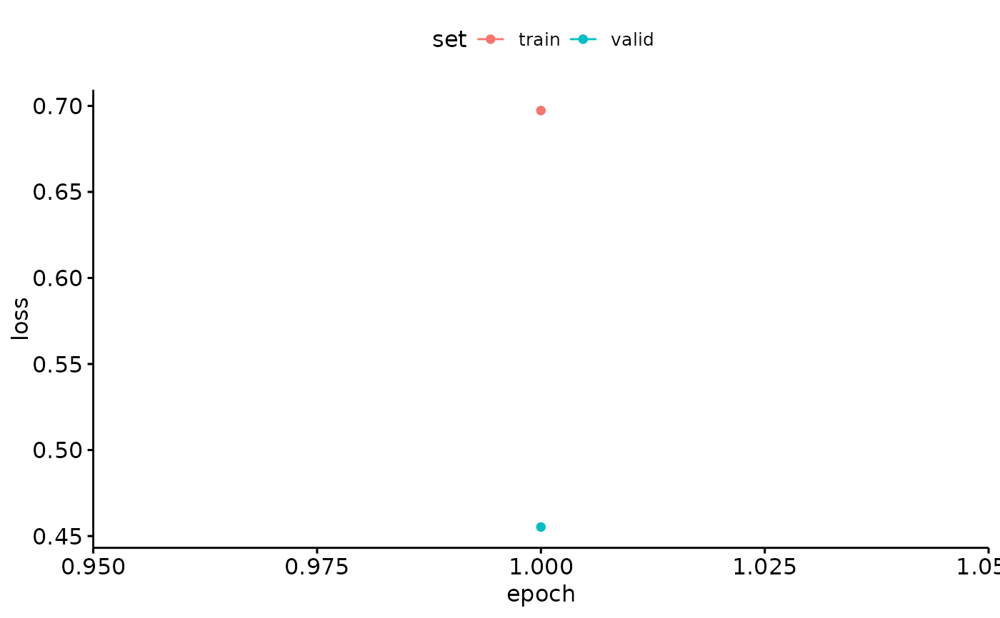

Train Binary CNN Models
train_CNN_binary.RdThis function trains Convolutional Neural Network (CNN) models, such as AlexNet, VGG16, VGG19, ResNet18, ResNet50, or ResNet152, on a given dataset. The trained model is saved along with metadata for further usage.
Usage
train_CNN_binary(
input.data.path,
test.data,
architecture,
noise.weight = 0.5,
unfreeze.param = TRUE,
batch_size = 32,
learning_rate,
save.model = FALSE,
epoch.iterations = 1,
early.stop = "yes",
output.base.path = "data/",
trainingfolder,
list.thresholds = seq(0.1, 1, 0.1),
positive.class = "Gibbons",
negative.class = "Noise"
)Arguments
- input.data.path
Character. The path to the folder containing the training data.
- test.data
Character. The path to the folder containing the test data.
- architecture
Character. The CNN architecture to use ('alexnet', 'vgg16', 'vgg19', 'resnet18', 'resnet50', or 'resnet152').
- noise.weight
Numeric. Assigned weight for the noise class. Default is 0.5.
- unfreeze.param
Logical. Determines whether to unfreeze.param all layers of the pretrained CNN for retraining. Default is TRUE.
- batch_size
Numeric. Batch size for training the model. Default is 32.
- learning_rate
Numeric. The learning rate for training the model.
- save.model
Logical. Whether to save the trained model for future use. Default is FALSE.
- epoch.iterations
Numeric. The number of epochs for training the model. Default is 1.
- early.stop
Character. Determines whether early stopping should be applied or not. Options: "yes" or "no". Default is 'yes'.
- output.base.path
Character. The base path where the output files should be saved. Default is 'data/'.
- trainingfolder
Character. A descriptor of the training data used for naming output files.
- list.thresholds
Numerical list indicating thresholds. Default is seq(0.1,1,.1).
- positive.class
Character. The name of the positive class label. Default is 'Gibbons'.
- negative.class
Character. The name of the negative class label. Default is 'Noise'.
Value
A list containing two elements:
Output_Path: The path where the model and metadata are saved.
Metadata: A dataframe containing metadata about the training session.
See also
nn_module and other torch functions.
Examples
{ input.data.path <- system.file("extdata", "binary/", package = "gibbonNetR")
test.data <- system.file("extdata", "binary/test/", package = "gibbonNetR")
result <- train_CNN_binary(
input.data.path = input.data.path,
test.data = test.data,
architecture = "alexnet", # Choose architecture
unfreeze.param = TRUE,
batch_size = 6,
learning_rate = 0.001,
epoch.iterations = 1, # Or any other list of integer epochs
early.stop = "yes",
output.base.path = paste(tempdir(),'/',sep=''),
trainingfolder = "test_binary"
)
print(result)
}
#> [1] "Training alexnet"
#> [1] "Postive class = Gibbons and Negative class = Noise"
#> Epoch 1/1
#> Train metrics: Loss: 0.7734 - Acc: 0.2778
#> Valid metrics: Loss: 0.485 - Acc: 0.5556
#> `geom_line()`: Each group consists of only one observation.
#> ℹ Do you need to adjust the group aesthetic?

#> [1] "Here are actual class labels, if they do not contain the positive or negative class cannot evaluate model performance: Gibbons"
#> [2] "Here are actual class labels, if they do not contain the positive or negative class cannot evaluate model performance: Noise"
#> NULL